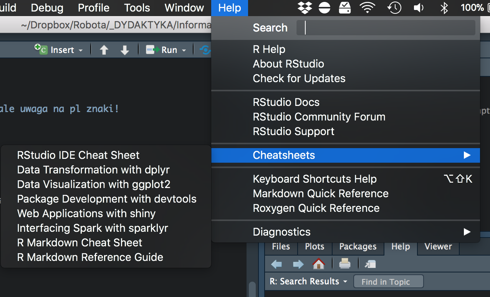
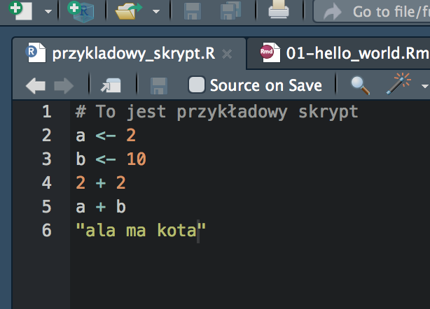

a <- 1Environmentrm(list = ls()) usuwa wszystko ze środowiskaa <- 1
b <- 3
a + b## [1] 4R?numericcharacterlogicalcomplexintegerclass()# Typ `numeric` już znasz - to liczby
a <- 45
b <- -100
c <- 34.2342 / 6243
class(a)## [1] "numeric"class(b)## [1] "numeric"class(c)## [1] "numeric"# Zmienne mogą też przechowywać tekst
a <- "Ala ma"
b <- "5"
c <- "kotów"
class(a)## [1] "character"class(b)## [1] "character"class(c)## [1] "character"# Oraz wartości logiczne TRUE i FALSE
ala_ma_kota <- TRUE
kot_ma_ale <- FALSE
# Skrót:
ala_ma_slonia <- T
slon_ma_ale <- F
class(ala_ma_kota)## [1] "logical"class(slon_ma_ale)## [1] "logical"complex służy do przechowywania liczb zespolonych (kto pamięta co to?)integer przechowuje liczby całkowiteA syntactically valid name consists of letters, numbers and the dot or underline characters and starts with a letter or the dot not followed by a number.
?make.names()
ala_ma_kota <- TRUE
ala ma kota <- TRUE
ala.ma.kota <- FALSE
Pierwszy#Kot&Ali <- "Dżejson"
Ali_2_kot <- "Sajmon"
CzwartyKotAliBoPozostaleZdechły <- "Dzubdziuś"
4KotAliBoPozostaleZdechły <- "Dzubdziuś"ala_ma_kota <- TRUE # OK
ala ma kota <- TRUE # NIE OK
ala.ma.kota <- FALSE # OK
Pierwszy#Kot&Ali <- "Dżejson" # NIE OK
Ali_2_kot <- "Sajmon" # OK
CzwartyKotAliBoPozostaleZdechły <- "Dzubdziuś" # OK ale uwaga!
4KotAliBoPozostaleZdechły <- "Dzubdziuś" # NIE OK# Przeanalizuj poniższy kod i spróbuj zgadnąć,
# jaki będzie wynik operacji
a <- 3
b <- 10
c <- -1
(a * b) + 4 / c ^ 101# Przeanalizuj poniższy kod i spróbuj zgadnąć,
# jaki będzie wynik operacji
a <- 3
b <- 10
c <- -1
(a * b) + 4 / c ^ 101## [1] 26# Przeanalizuj poniższy kod i spróbuj zgadnąć,
# jaka będzie wartość zmiennej c na koniec
a <- 1
b <- 2
c <- a + b
a + 1
b + 2
b <- c + a
c <- a + b + ca <- 1
b <- 2
c <- a + b
a + 1## [1] 2b + 2## [1] 4b <- c + a
c <- a + b + c
c## [1] 8R?class()?'+'??regression
kot_ali <- "Kewin"
kot_ali <- "Dżejson"
kot_ali## [1] "Dżejson"kot_ali <- "Kewin"
Kot_ali <- "Dżejson"
kot_ali## [1] "Kewin"# Kod rozpoczynający się od hasza (#) nie będzie interpretowany
# Komentarze są bardzo ważne dla czytelności kodu!
koty_ali <- 4
# Ala ma nowego kota
koty_ali <- koty_ali + 1
koty_ali## [1] 5R byłaby bardzo trudnaR by wykonał jedną po drugiej*.R
Run wykonuje bierzącą linijkę kodu albo zaznaczeniectrl/cmd + enterSource wykonuje cały skryptR StudioR Studiogit itd.R StudioR_cwiczenia albo podobnej, wszystko co robisz na tych zajęciach trzymaj w tym projekciezajecia_1.R albo zadanie_1-3.RR ale też dowolne inne plikiR Studio, którego będziesz używać na tych zajęciachwhoami.txt, w którym napisz swoje imię, nazwisko, rok studiów i numer albumu (w osobnych liniach)zad1-1.R, w którym stworzysz trzy zmienne typu numeric i zrobisz na nich parę operacji matematycznychR polega na korzystaniu z funkcjiclass()nazwa(argument)nazwa(arg1, arg2, arg3)nazwa()round(x, digits = 0)paste (..., sep = " ", collapse = NULL)round(x = 3.123, digits = 1)round(digits = 1, x = 3.123)round(3.123, 1)abs(-123.321) # Wartość bezwzględna## [1] 123.321sqrt(4) # Pierwiastek kwadratowy## [1] 2round(665.712397234) # Zaokrąglenie## [1] 666sin(pi / 2) # Sinus## [1] 1cos(1) # Cosinus## [1] 0.5403023log(1) # Logarytm naturalny## [1] 0paste("Ala", "ma", "kota") # Łączy teksty/stringi## [1] "Ala ma kota"toupper("ala ma kota") # WIELKIE LITERY## [1] "ALA MA KOTA"tolower("AlA mA kOtA") # małe litery## [1] "ala ma kota"numeric, character, logical etc.)c()R jest wektorem (czasem o długości 1)[1] w konsoli sugeruje pierwszą pozycję w wektorzec(1, 2, 3, 5, 7, 56.66)## [1] 1.00 2.00 3.00 5.00 7.00 56.66c("Ala", "ma", "kota")## [1] "Ala" "ma" "kota"c(TRUE, FALSE, TRUE, TRUE, FALSE)## [1] TRUE FALSE TRUE TRUE FALSE# Wektor musi składać się z danych tego samego typu
# R stara się to poprawić automatycznie
c("ala", "ma", 3, "koty")## [1] "ala" "ma" "3" "koty"# Wektor musi składać się z danych tego samego typu
# R stara się to poprawić automatycznie
c(T, T, F, T, 3)## [1] 1 1 0 1 3# Wektor musi składać się z danych tego samego typu
# R stara się to poprawić automatycznie
c("ala", "koty", 13, F)## [1] "ala" "koty" "13" "FALSE"# Wektory można też tworzyć korzystając z sekwencji
c(1:10)## [1] 1 2 3 4 5 6 7 8 9 10# Czasem sekwencje mogą być bardzo długie
# (zauważ oznaczenia kolejnych elementów w wektorach)
c(1:100)## [1] 1 2 3 4 5 6 7 8 9 10 11 12 13 14 15 16 17
## [18] 18 19 20 21 22 23 24 25 26 27 28 29 30 31 32 33 34
## [35] 35 36 37 38 39 40 41 42 43 44 45 46 47 48 49 50 51
## [52] 52 53 54 55 56 57 58 59 60 61 62 63 64 65 66 67 68
## [69] 69 70 71 72 73 74 75 76 77 78 79 80 81 82 83 84 85
## [86] 86 87 88 89 90 91 92 93 94 95 96 97 98 99 100# Sekwencje można łączyć z innymi elementami
c(1, 3, 5, 7, 10:20, -100)## [1] 1 3 5 7 10 11 12 13 14 15 16 17 18 19
## [15] 20 -100# Na wektorach można wykonywać operacje,
# tak samo jak na "zwykłych" zmiennych
a <- c(1:5)
b <- c(6:10)
a * 2
b + 4
b - aa <- c(1:5)
b <- c(6:10)
a * 2## [1] 2 4 6 8 10b + 4## [1] 10 11 12 13 14b - a## [1] 5 5 5 5 5# Problem: chcemy pokazać tylko i-ty element wektora a
a <- c("Poniedziałek", "Wtorek", "Środa", "Czwartek", "Piątek", "Sobota", "Niedziela")
a[1]## [1] "Poniedziałek"a[5]## [1] "Piątek"# Problem: chcemy pokazać kilka wybranych elementów wektora a
a <- c("Poniedziałek", "Wtorek", "Środa", "Czwartek", "Piątek", "Sobota", "Niedziela")
a[1:3]## [1] "Poniedziałek" "Wtorek" "Środa"a[c(1, 3, 5)]## [1] "Poniedziałek" "Środa" "Piątek"a <- c("wiosna", "lato")
b <- c("jesień", "zima")
c(a, b)a <- c("wiosna", "lato")
b <- c("jesień", "zima")
c(a, b)## [1] "wiosna" "lato" "jesień" "zima"R działają tak samo dla skalarów i dla wektorówa <- c(1, 2, 3, 5, -10.6789)
abs(a)
sqrt(a)
round(a)R działają tak samo dla skalarów i dla wektorówa <- c(1, 2, 3, 5, -10.6789)
abs(a)## [1] 1.0000 2.0000 3.0000 5.0000 10.6789sqrt(a)## Warning in sqrt(a): NaNs produced## [1] 1.000000 1.414214 1.732051 2.236068 NaNround(a)## [1] 1 2 3 5 -11oceny_z_2_semestru <- c(5, 3, 4, 4.5, 3, 3.5, 5, 4.5)
# Średnia
mean(oceny_z_2_semestru)
# Odchylenie standardowe
sd(oceny_z_2_semestru)oceny_z_2_semestru <- c(5, 3, 4, 4.5, 3, 3.5, 5, 4.5)
mean(oceny_z_2_semestru)## [1] 4.0625sd(oceny_z_2_semestru)## [1] 0.8210403a <- c("Poniedziałek", "Wtorek", "Środa", "Czwartek", "Piątek", "Sobota", "Niedziela")
a[8]a <- c("Poniedziałek", "Wtorek", "Środa", "Czwartek", "Piątek", "Sobota", "Niedziela")
a[8]## [1] NAR wartość NA jest szczególna - oznacza brak danych (not available)NA nie jest tożsame z 0 ani "" (pusty string)NA, nie wiemy ile wynosi jego wartośćNA3 + NA
100 * NA
2 + 2 + 2 + NA
sin(NA)NA3 + NA## [1] NA100 * NA## [1] NA2 + 2 + 2 + NA## [1] NAsin(NA)## [1] NANAabs(c(-1, -2, 3.14, NA))
mean(c(3, 4, 5, NA))
sd(c(5, 5, 5, 5, NA))# Żeby sprawdzić, czy coś jest równe stosujemy operator ==
2 == 2
"ala" == "kota"
100 == "100"# Żeby sprawdzić, czy coś jest równe stosujemy operator ==
2 == 2## [1] TRUE"ala" == "kota"## [1] FALSE100 == "100"## [1] TRUE# Żeby sprawdzić, czy coś jest nierówne stosujemy operator !=
2 != 2## [1] FALSE"ala" != "kota"## [1] TRUE100 != "100"## [1] FALSE# Żeby sprawdzić, czy coś jest nierówne stosujemy operator !=
2 != 2
"ala" != "kota"
100 != "100"# Nierówności ostre/nieostre
2 > 1
2 >= 2
2 < 1
2 <= 1# Nierówności ostre/nieostre
2 > 1## [1] TRUE2 >= 2## [1] TRUE2 < 1## [1] FALSE2 <= 1## [1] FALSETRUE & TRUE
TRUE & FALSE
FALSE & TRUE
FALSE & FALSETRUE & TRUE## [1] TRUETRUE & FALSE## [1] FALSEFALSE & TRUE## [1] FALSEFALSE & FALSE## [1] FALSE(2 == 2) & (0 == 0)
1 == abs(-1)
(2 > 3) & (3 > 4)(2 == 2) & (0 == 0)## [1] TRUE1 == abs(-1)## [1] TRUE(2 > 3) & (3 > 4)## [1] FALSETRUE | TRUE
TRUE | FALSE
FALSE | TRUE
FALSE | FALSETRUE | TRUE## [1] TRUETRUE | FALSE## [1] TRUEFALSE | TRUE## [1] TRUEFALSE | FALSE## [1] FALSE1 == abs(-1)
(2 == 2) | (2 == 3)
(0 != 0) | (2 >= 3)1 == abs(-1)## [1] TRUE(2 == 2) | (2 == 3)## [1] TRUE(0 != 0) | (2 >= 3)## [1] FALSE!TRUE
!FALSE
!(2 == 2)
!((0 != 0) | (2 >= 3))!TRUE## [1] FALSE!FALSE## [1] TRUE!(2 == 2)## [1] FALSE!((0 != 0) | (2 >= 3))## [1] TRUE